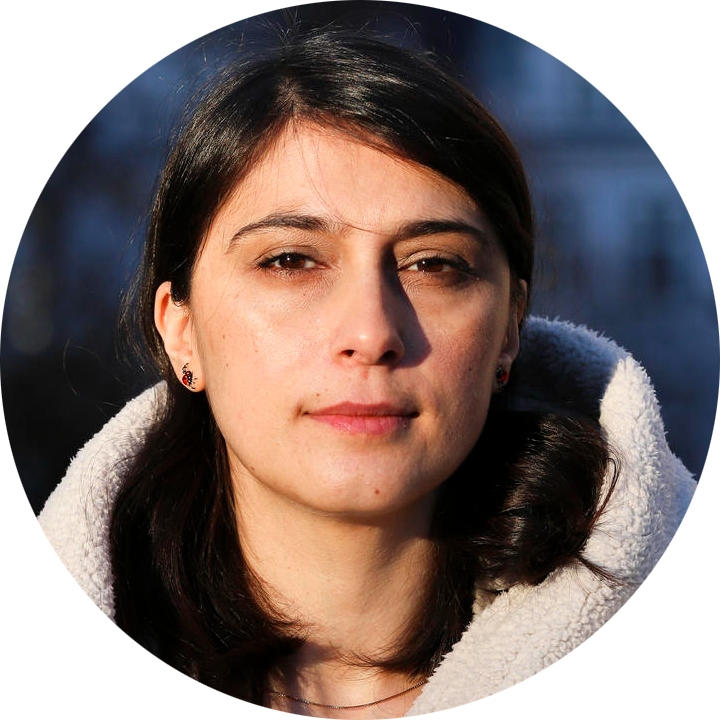

This text is semi-transparent.
This text is semi-transparent.
This text is semi-transparent.
This text is semi-transparent.
This text is semi-transparent.
This text is semi-transparent.
This text is semi-transparent.
This text is semi-transparent.
This text is semi-transparent.
This text is semi-transparent.
This text is semi-transparent.
This text is semi-transparent.
This text is semi-transparent.
This text is semi-transparent.
Workshop at IJCAI 2024, Jeju Island, South Korea
August 5, 2024
Room 401A, Jeju International Convention Center (ICC)
Although AI has brought transformative changes to various aspects of life, its impact on researchers unfolds in a nuanced manner. On the one hand, AI assists in various research disciplines, such as Social Science, Finance, Medicine, GeoScience, Math, etc., significantly expediting academic processes. However, it's important to note that these AI programs are still guided by human researchers. On the flip side, the AI era poses challenges for researchers. While it streamlines certain tasks, researchers find themselves still having to undergo years of professional training, extensive paper reading to stay current, quicker ideation due to fast-paced advancements, and a growing number of papers to review. It appears that AI is pushing them to work harder and be more productive. In contemplating the future, the question looms: Can AI potentially replace researchers as autonomous scientists?
This workshop aims to bring together researchers from different disciplines who are interested in how AI is made use of to assist, accelerate, and even automate their research activities. As such, the workshop welcomes and covers a wide range of topics, including (non-exclusively):
Paper format & proceedings: Please use the official IJCAI format to submit anonymous manuscripts (double-blind paper review), and we accept papers of pages >=4 (reference and appendix excluded).
Camera-ready submission:
Best Paper Awards: We will set the "Best Paper Award".
Contact: AI4Research2024@gmail.com
All deadlines are 11.59 pm UTC -12h (“anywhere on Earth”).
|

Prof. Marija Slavkovik |
Prof. Zachary Ives |
Prof. Zhouhan Lin |
Prof. Marija Slavkovik: "AI as A Tool, AI as A Master and Some Ethics in Between"
Abstract: The talks will consider the problem of AI value alignment from the perspective of the problem of how to automate moral reasoning, but also from the perspective of how do we govern AI itself. We will situate the normative reasoning work in the larger problem of AI alignment and machine ethics, by discussing the pertinent differences between how value alignment sees norms, why value alignment needs norms and overall what is the role of the individual in the collective that is modern AI applications.
Bio: Marija Slavkovik is a Professor with the Faculty for Social Sciences of the University of Bergen. Her background is in computer science and artificial intelligence. She has been doing research in machine ethics since 2012. Machine ethics studies how moral reasoning can or should be automated. Marija works on formalising ethical collective decision-making. She has held held several seminars, tutorials and graduate courses on AI ethics (http://slavkovik.com/teaching.html). Marija is a vice-chair of the the Norwegian AI Association, board member of European Association for Artificial Intelligence, a member of the informal advisory group on Ethics, Legal, Social Issues (ELS) of CLAIRE, in the editorial board of AI Magazine, and AI and Society track editor of JAIR. She is the current chair of the department of information science and media studies that since 2021 has been offering, in collaboration with the department of informatics. the first bachelor program in AI in Norway.
Prof. Zachary Ives: "AI-Accelerated Discovery through Dataset Augmentation"
Abstract: Modern AI techniques have advanced our ability to process, recognize, and match complex multimodal data: natural language, images, timeseries. Yet many applications (e.g., in medicine, the Web, or the Internet of Things) still have an important need for structured records. I will present the Juneau system, which manages large repositories (data lakes) of structured and partly structured data, and helps assemble structured datasets suitable for visualization, report generation, and machine learning modeling. I will also describe our broader agenda and ongoing work in building machine learning-integrated data management systems.
Bio: Zachary Ives is the Adani President's Distinguished Professor of Computer and Information Science at the University of Pennsylvania. Zack's research interests include data integration, provenance and trustworthiness, data management for scientific discovery, and machine learning systems. He is a Fellow of the ACM and a recipient of the NSF CAREER award. He has also been awarded the Christian R. and Mary F. Lindback Foundation Award for Distinguished Teaching and an IEEE Technical Committee on Data Engineering Education Award. His work has been recognized with a SIGMOD best paper award, an ICDE Most Influential Paper Award, and an ISWC Ten-Year Award. He is a co-author of the textbook Principles of Data Integration.
Prof. Zhouhan Lin: "Learning Foundation Language Models for Geoscience Knowledge Understanding and Utilization"
Abstract: Large language models (LLMs) have achieved huge success for their general knowledge and ability to solve a wide spectrum of tasks in natural language processing (NLP). Due to their impressive abilities, LLMs have shed light on potential inter-discipline applications to foster scientific discoveries of a specific domain using artificial intelligence (AI for science, AI4S). In the meantime, utilizing NLP techniques in geoscience research and practice is wide and convoluted, contributing from knowledge extraction and document classification to question answering and knowledge discovery. In this work, we take the initial step to leverage LLM for science, through a rather straightforward approach. We try to specialize open-sourced LLMs into geoscience, by further pre-training the model with a vast amount of texts in geoscience, as well as supervised fine-tuning (SFT) the resulting model with our custom collected instruction tuning dataset. These efforts resulted in two models of different sizes, which are K2-7B and GeoGalactica-30B, as well as a series of curated datasets and data-cleaning tools. To our knowledge, GeoGalactica-30B is the largest language model for the geoscience domain. We validate GEOGALACTICA on various geoscience examinations and geoscience-related open-domain questions evaluated by a group of senior geoscientists. GeoGalactica-30B demonstrates the state-of-the-art performance in a diverse range of NLP tasks in geoscience, as well as revealing the potential of using geoscience-related tools.
Bio: Zhouhan Lin is now an assistant professor at Shanghai Jiaotong University (SJTU). Before joining SJTU, he was a visiting scientist at Facebook AI Research. He graduated from the Mila lab at the University of Montreal, supervised by Yoshua Bengio. During his Ph.D., he has also worked at Google AI, Microsoft Research, and IBM Watson. Zhouhan proposed the early version of self-attention, which was later integrated into the famous Transformer and Graph Attention Nets. Zhouhan has served as area chair or senior program committee member in several top-tier venues such as EMNLP 2022, AAAI 2021, and AACL 2022, COLING 2024, etc.
Attention!!! Room 401A. Time: 9am-5pm (full day workshop). 10:30-11:00 (coffee); 12:30-14:00 (lunch break); 15:30-16:00 (coffee)
| Session | Korea time | Session chair |
|---|---|---|
| Opening speech | 09:00-09:10 am (10 mins) | Wenpeng Yin |
|
Keynote by Prof. Marija Slavkovik AI as A Tool, AI as A Master and Some Ethics in Between |
09:10-09:50 am (40mins) | Wenpeng Yin |
Invited Paper Talk Speculative Exploration on the Concept of Artificial Agents Conducting Autonomous Research (presenter: Shiro Takagi) |
09:50-10:10 am (20mins) | Janice Ahn |
Invited Paper Talk Large Language Models for Automated Open-domain Scientific Hypotheses Discovery (presenter: Zonglin Yang) |
10:10-10:30 am (20mins) | Janice Ahn |
| Coffee break | 10:30-11:00 am (30mins) | |
|
Keynote by Prof. Zachary Ives AI-Accelerated Discovery through Dataset Augmentation |
11:00-11:40 am (40mins) | Wenpeng Yin |
Best Paper Talk Step-Back Profiling: Distilling User History for Personalized Scientific Writing (presenter: Xingyao Zhang) |
11:40-12:10 pm (30mins) | Wenpeng Yin |
Invited Paper Talk ExpeL: LLM Agents Are Experiential Learners (presenter: Andrew Zhao) |
12:10-12:30 pm (20mins) | Janice Ahn |
| Lunch break | 12:30-14:00 pm (90mins) | |
|
Keynote by Prof. Zhouhan Lin Learning Foundation Language Models for Geoscience Knowledge Understanding and Utilization |
14:00-14:40 pm (40mins) | Wenpeng Yin |
Highlight Paper Talk Are LLMs Capable of Data-based Statistical and Causal Reasoning? Benchmarking Advanced Quantitative Reasoning with Data (presenter: Zirui Wu) |
15:00-15:20 pm (20mins) | Janice Ahn |
Invited Paper Talk LLMs Assist NLP Researchers: Critique Paper (Meta-)Reviewing (presenter: Wenpeng Yin) |
14:40-15:00 pm (20mins) | Janice Ahn |
| Coffee break | 15:30-16:00 pm (30mins) | |
|
Poster session
| 16:00-16:50 pm (50mins) | |
| Closing Remarks | 16:50-17:00 pm (10 mins) | Wenpeng Yin |
|
Wenpeng Yin |
Janice Ahn |
Rui Zhang |
Lifu Huang |
|
Najoung Kim |
Wei Xu |
Muhao Chen |
Heike Adel |